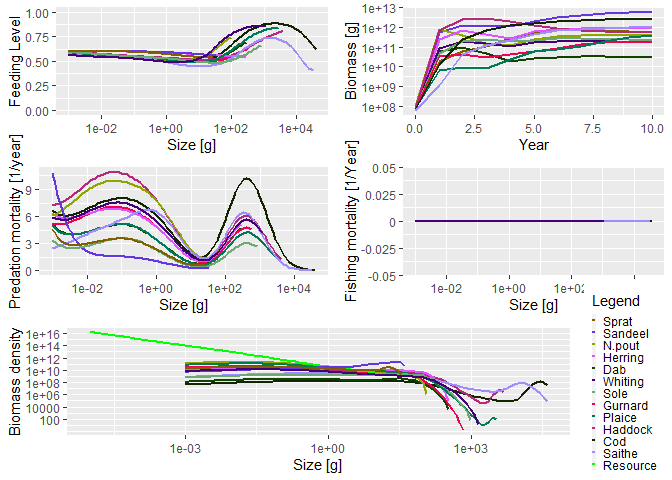

Mizer is an R package to run multi-species size-spectrum models of fish communities. The package has been developed to model marine ecosystems that are subject to fishing. However, it may also be appropriate for other ecosystems.
The package contains routines and functions to allow users to set up an ecosystem model, and then project it through time under different fishing strategies. Methods are included to explore the results, including plots and calculation of community indicators such as the slope of the size spectrum. Size-based models can be complicated so mizer contains many default options that can be easily changed by the user.
Mizer has been supporting research in marine ecology and fisheries science since 2014 (see publications). It is still under active development. The new version 2.0 has increased the user-friendliness and the flexibility of the framework. Contributions from the user community are very welcome. There is a sister package called mizerExperimental where user contributions can be checked out and receive feedback from the community. Example mizer models can be contributed to mizerExamples.
Does your project or publication use mizer? If so, we would love to know. You can also join our Google Discussion group here: https://groups.google.com/forum/#!forum/size-spectrum-models
Recent work on mizer was funded by the European Commission Horizon 2020 Research and Innovation Programme under Grant Agreement No 634495 for the project MINOUW (http://minouw-project.eu/) and the Australian Research Council Discovery Project Rewiring Marine Food Webs.
Smooth traffic on the biomass highway
To understand what mizer has to contribute to fisheries management, it is best to think of the marine ecosystem as a transport system that moves biomass from the size of primary producers (mostly unicellular plankton) up to the sizes of fish that humans like to consume. Each fish that grows up from egg size to maturity by eating smaller individuals is like a car on this biomass highway. The yield of our fisheries depend on this traffic flowing smoothly and without traffic jams.
In road traffic, if traffic density gets too high in a section of the highway, drivers slow down, which leads to a pile-up producing even higher traffic density, leading to further slow-down in a potentially vicious cycle known as a traffic jam. Traffic management that ignores how the traffic density affects traffic speed fails. Luckily our mathematical understanding of transport equations has made practical contributions to managing traffic in ways that produce smoother traffic flow and hence higher throughput.
Mizer implements the transport equations for marine ecosystems. The potential for traffic jams is the same: if for example there is a high density of predators of a particular size, which all have preference for prey of a particular smaller size, then due to competition for that prey the growth of those predators slows down, leading to a pile-up which leads to further depletion of prey, leading to further slow-down, in a potentially vicious cycle.
Luckily the natural ecosystem has evolved to facilitate extremely smooth traffic on the biomass highway with resultant high productivity. This state is characterised by an approximate power-law shape of the biomass size spectrum. The purpose of mizer is to allow us to understand how various stressors, like fishing or climate change, affect the size spectrum and hence flow of biomass and the productivity and resilience of the marine ecosystem. Mizer allows us to investigate how size-based fisheries management strategies can be used to keep the ecosystem close to its natural productive state.
Installation
The package is on CRAN and therefore available from R’s built-in package manager.
# Install release version from CRAN install.packages("mizer") # Alternatively, install development version from GitHub devtools::install_github("sizespectrum/mizer")
Example
The following code loads the mizer package, loads some information about species in the North Sea that comes as an example with the package, sets up the parameters for the mizer model, and runs a simulation for 10 years.
library(mizer) params <- newMultispeciesParams(NS_species_params, inter) sim <- project(params, t_max = 10, effort = 0)
The results of the simulation can then be analysed, for example via plots:
plot(sim)

See the accompanying Get started page for more details on how the package works, including detailed examples.